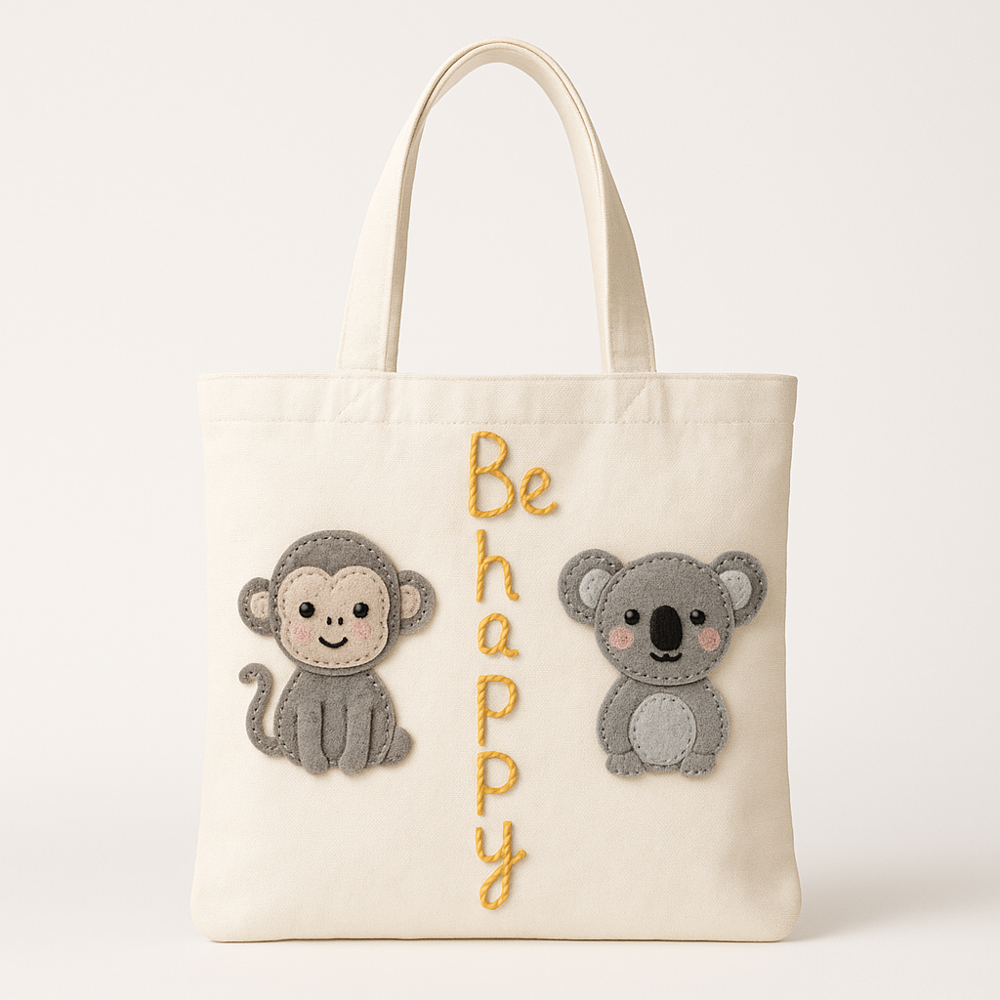
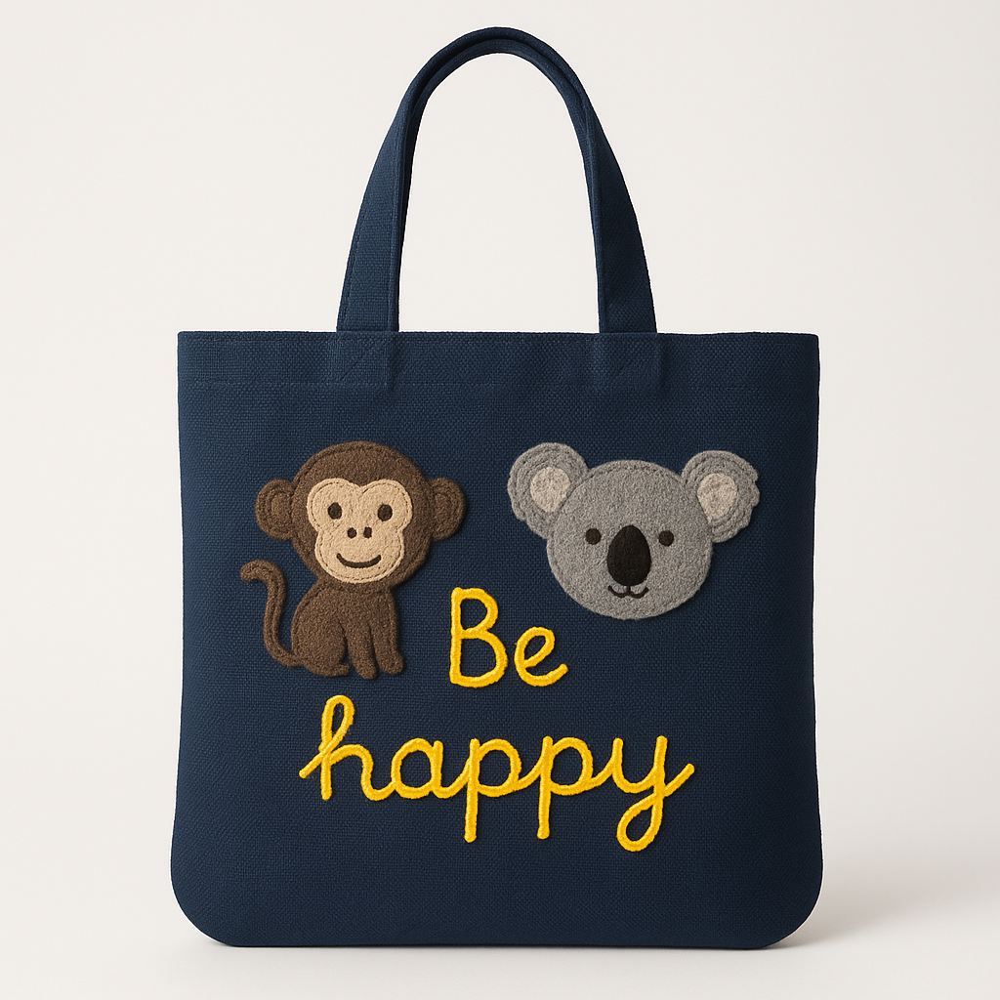
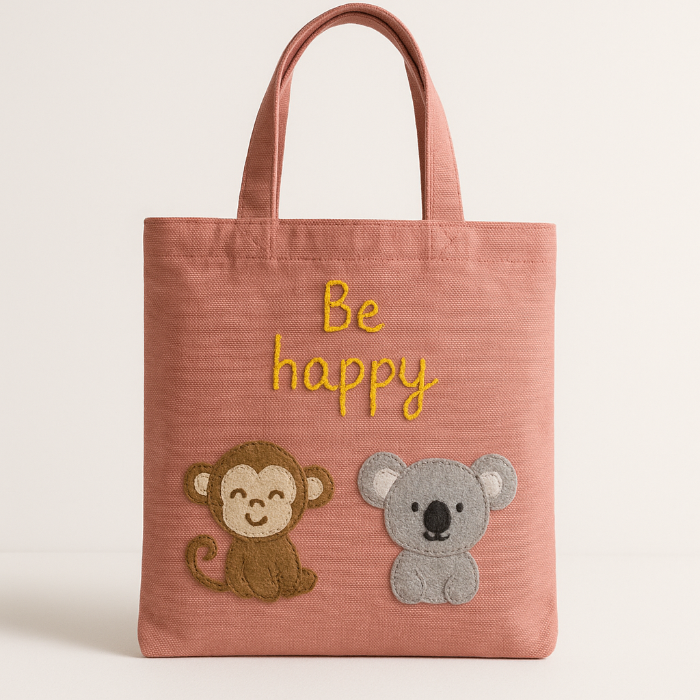
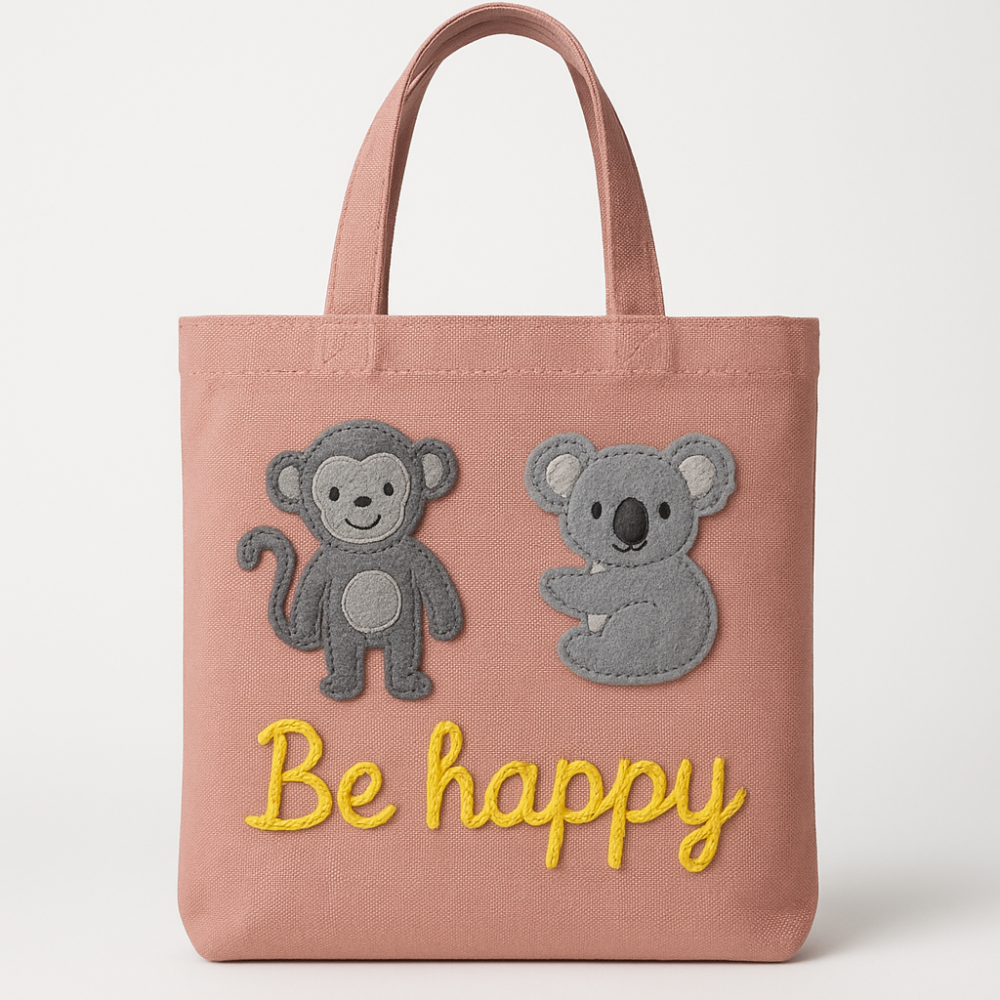
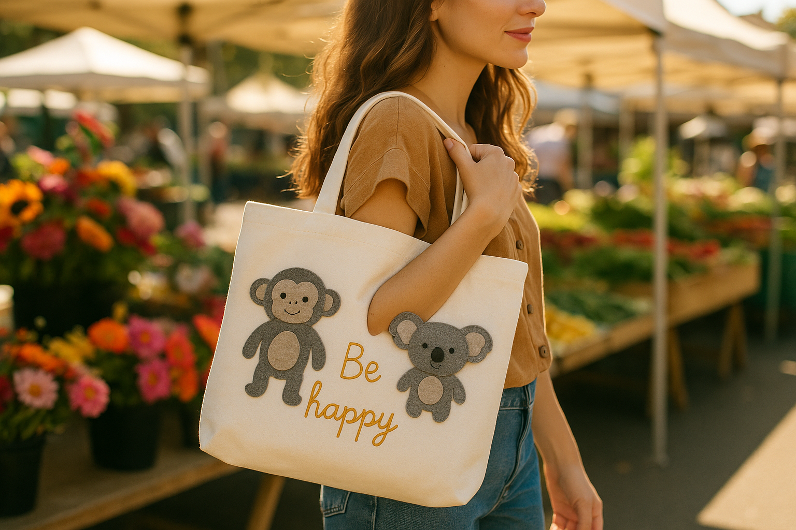
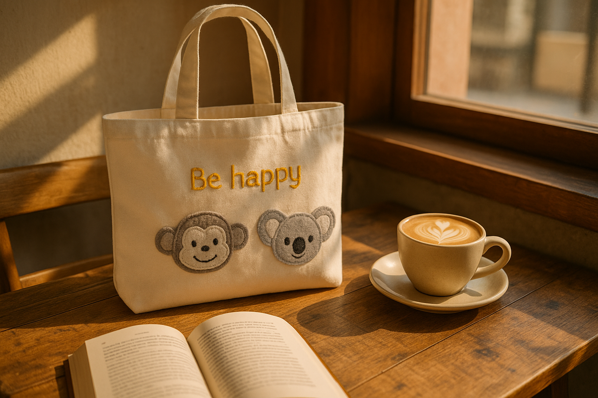
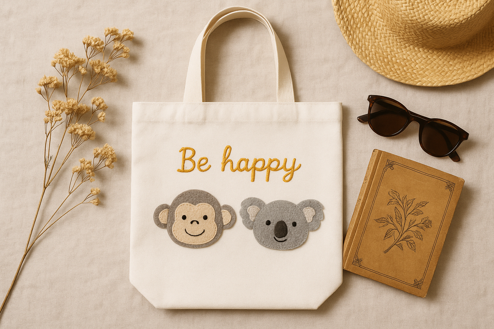

Carry Joy in Every Step
Meet the Be Happy Bag, a handcrafted white cotton tote with hand stitched animal patches and bright yellow embroidery that brings a calm joyful mood to your day.
Get Your Be Happy Bag
$45 USD
Meet the Be Happy Bag, a handcrafted white cotton tote with hand stitched animal patches and bright yellow embroidery that brings a calm joyful mood to your day.

Every Be Happy Bag begins as a plain cotton canvas and becomes a warm little work of art through patient stitching, soft felt detailing, and a message that reminds us to choose joy.
The monkey and koala patches are cut from gray felt and sewn by hand, stitch by stitch, so each expression feels personal and alive.
The yellow Be happy lettering runs down the center like a little thread of sunshine, bold enough to notice, soft enough to feel timeless.
No two bags are exactly alike, each tote carries tiny variations that prove a human hand made it with care.
Same handmade charm, same joyful patches. Pick the canvas that matches your mood.
The original

Bold and versatile

Calm and earthy

Warm and soft
Light to carry, easy to style, and designed to feel soulful from morning market trips to relaxed cafe afternoons.
Monkey and koala felt patches are sewn by hand for a tactile handmade finish.
White cotton body with fabric handles, reusable, breathable, and gentle on daily essentials.
Comfortable to carry with a slim profile that folds easily into your day without bulk.
Small differences in stitching make every bag singular, personal, and gift worthy.
Imagine your Be Happy Bag in places that feel slow, bright, and full of human warmth.



Real style, real joy, and a little handmade magic that people notice right away.
I bought this as a small gift for my sister and she smiled the second she saw the stitching. It feels so personal and sweet.
Elena R, New YorkThe cotton is lightweight but still sturdy enough for my notebook, water bottle, and fruit. The yellow embroidery is beautiful in person.
Marina T, AustinIt looks boutique and handcrafted, not mass made. I get compliments every time I carry it to the cafe.
Sophia L, SeattleBe Happy Bag is affordable, thoughtful, and ready to become your favorite daily tote or your next meaningful gift.